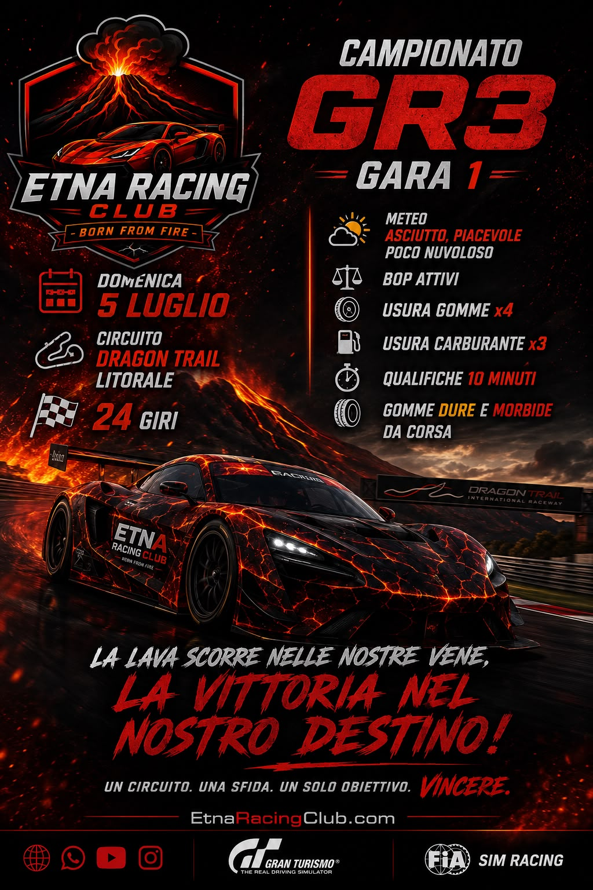
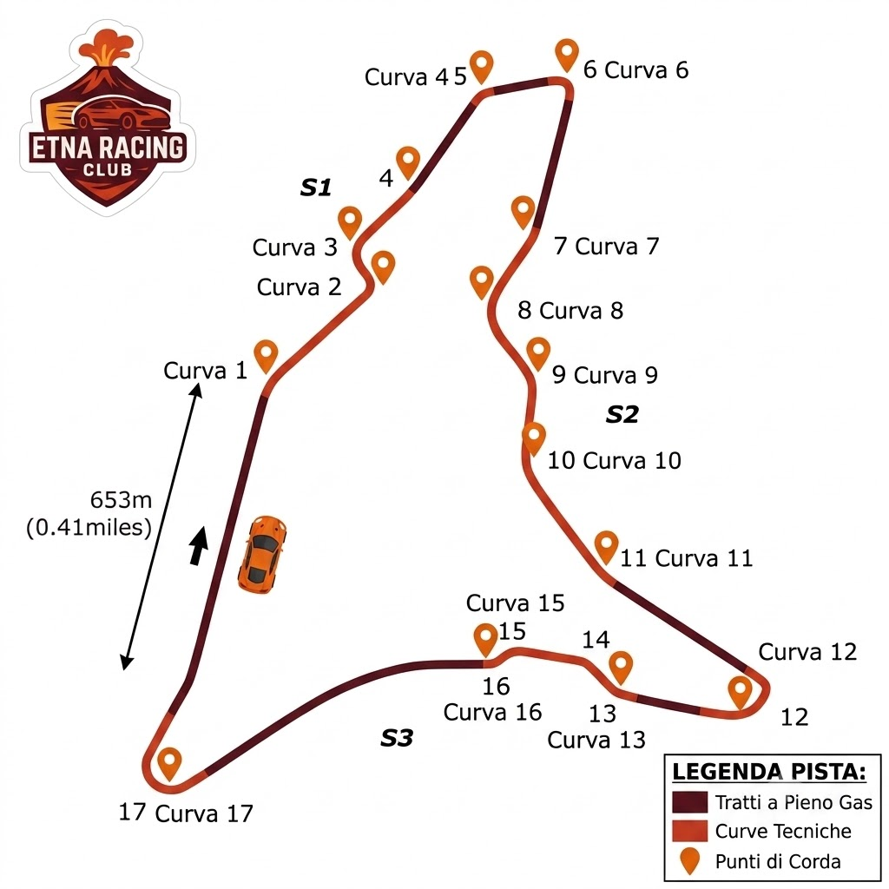

Siamo finalmente arrivati al giorno che in tanti stavano aspettando, la prima gara del campionato Gr3 del nuovo anno nella pista di Dragon Trail, layout Litorale.
Noi della redazione siamo riusciti ad intervistare alcuni dei protagonisti chiedendo se fossero riusciti a provare pista e auto, se avessero deciso che tipo di strategia usare e cosa si aspettassero da questa gara
Antonio ci ha detto che ha deciso di tornare alla Porsche dopo un po’ di tempo che non la utilizzava e dopo averla provata si è trovato subito bene nonostante si renda conto di non avere ancora i ritmi e i tempi degli altri però crede di riuscire a stare nelle posizioni di centro gruppo, l auto inizialmente gli è sembrata aggressiva ma ha capito subito che il problema era la sua guida impaurita, e giro dopo giro ha ritrovato sicurezza capendo anche come usarla bene; per quanto riguarda la strategia ci ha detto che sta trovando qualche difficoltà, soprattutto a causa del carburante e che vorrà fare altre prove per capire bene come comportarsi, discorso diverso per le gomme dove si è sentito a suo agio con entrambe le mescole; su quello che si aspetta dalla gara ci ha detto che essendo la prima gara avvertirà molta tensione e molta competitività (cosa che sente anche per l’ultima gara), prevede molta tensione e voglia di vincere da parte di tutti
Carmine invece ci ha detto che lui, come suo solito, ha provato varie auto prima di optare per l’Audi anche se questa auto gli permette in questa gara di usare soltanto una delle cinque diverse strategie di gara possibili, mentre invece sostiene che la Bmw provata ieri ha e con cui ha un ottimo feeling gli permetteva più soluzioni vista la sua tenuta di strada nel terzo settore, quello del “muro della morte”, per la strategia sostiene di aver trovato quella migliore e su quello che si aspetta da questa gara spera di arrivare a podio visto che a suo modo di vedere il livello si è alzato temendo Pierpaolo e soprattutto Giovanni che forse deve ancora trovare il perfetto ritmo gara ma che sul giro secco è fortissimo. Non si esprime nemmeno su Morzeus perché lo ritiene di un altro pianeta mentre invece è curioso di vedere a che punto sia Antonio dopo la sua lunga sosta lontano dalle corse anche se ha visto che già con la Panda è andato fortissimo
Abbiamo posto le medesime domande a Stefano e lui ci ha detto che ha deciso di restare con la Mercedes che aveva già nel precedente campionato visto che ci si è trovato bene e che ha già fatto un po’ di giri in pista anche se non è stato facile adattarsi a questo circuito, sulla strategia ci ha fatto capire di essere in alto mare, dalla gara si aspetta una lotta apertissima tra se stesso, Carmine, Pierpaolo, Giovanni e gli altri fino all’ultima curva
Claudio ci ha detto che lui continuerà a correre con la sua amata Bmw M6 che ormai conosce come le sue tasche ma che dovrà portare al limite perché questo circuito è molto difficile e tecnico, la sua idea di strategia è orientata verso le due soste anche se si aspetta in tanti sull’unica sosta; dice di sentire anche una certa emozione per la ripartenza del campionato, c’è diversa gente nuova e bisogna capire il livello di tutti, quindi “incrociamo le dita e teniamo duro”
Quello che ci ha detto Fabio è che lui è riuscito a fare diversi test, le sensazioni sono state positive anche se c’è ancora qualcosa da migliorare sul passo gara essendo questa una pista che non perdona gli errori e bisogna essere costanti dal primo all ultimo giro, nel complesso però si sente abbastanza pronto, la sua idea di strategia sembra essere chiara ma preferisce non esporsi troppo, molto ovviamente dipenderà da come si svilupperà la gara e dalle battaglie in pista. L’importante sarà adattarsi rapidamente alle situazioni e cercare di commettere meno errori possibile. Lui da questa gara si aspetta sia molto combattuta, il livello dell’Etna Racing Club è sempre alto e basta un piccolo errore per perdere posizioni, il suo obiettivo è disputare una gara pulita e divertirsi per cercare di portare a casa il miglior risultato possibile
Quando siamo riusciti a parlare con Daniele abbiamo trovato una persona che aveva proprio voglia di rispondere alle nostre domande, probabilmente perché aveva appena finito di fare alcuni giri ed era ancora piuttosto “caldo”, ci ha detto che il circuito gli piace molto, è davvero stimolante ma deve ammettere che la sessione non è andata come sperava, ha ancora tanto da fare per trovare il giusto feeling con l auto e interpretare al meglio le traiettorie, quando gli abbiamo chiesto della strategia ha abbozzato una risata e ci ha detto che al momento lui pensa a.. macinare chilometri visto che ha riscontrato diverse difficoltà e i prossimi turni di prova saranno fondamentali per trovare un buon ritmo, la strategia la deciderà solo quando avrà trovato un passo più costante. Sostiene che la sua gara sarà di sofferenza e difesa ma che la vive come una grandissima opportunità e che l obiettivo è fare il meglio possibile ma soprattutto sfruttare ogni singolo giro come allenamento intensivo per il prosieguo del campionato
Giovanni invece è stato di poche parole, dicendo che si è allenato e che si sente competitivo con questa auto nuova per lui ma ha paura che in una pista come questa si farà fatica a fare sorpassi, rispondendo alla domanda sulla strategia ci ha fatto capire che per lui sarà molto importante evitare problemi in partenza e si augura di arrivare a podio
Infine siamo riusciti a parlare anche con Pierpaolo e ci ha confessato che nonostante la pista gli piaccia e abbia voluto fare questo campionato con la sua Honda crede che questa prima gara sarà molto difficile per lui per via del carattere poco semplice della sua auto, è ancora molto in dubbio sulla strategia perché non ha ancora scelto se fare una o due soste e spera di qualificarsi bene in qualifica per sfruttare la grande partenza di questa auto per poi difendersi dagli altri, obiettivo: Top 5
Queste sono state le impressioni che siamo riusciti ad ottenere da alcuni dei piloti di questo splendido Club, adesso non ci resta che aspettare il semaforo verde
